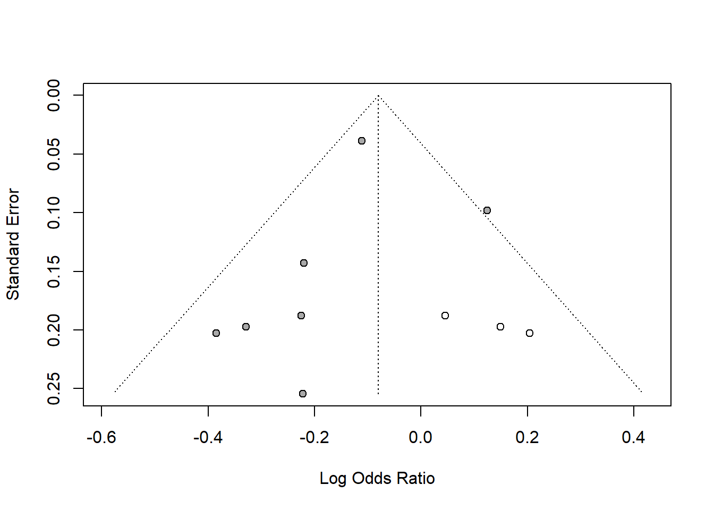
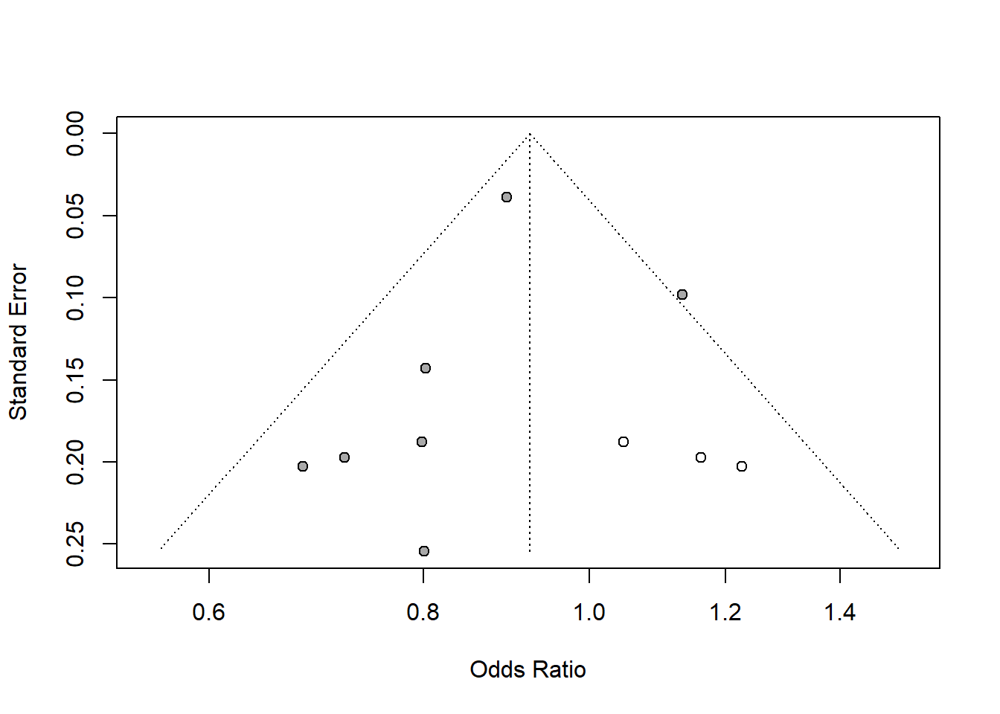
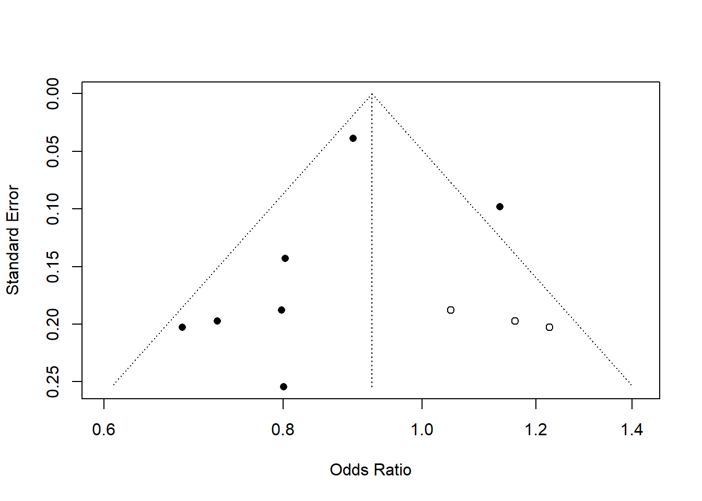
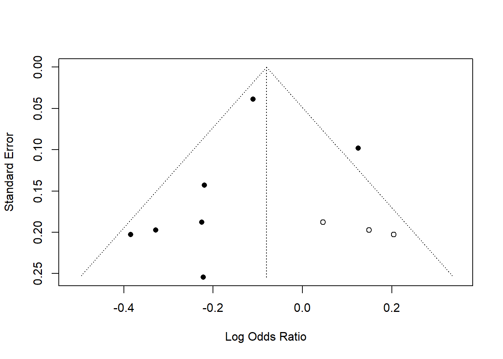

A comprehensive analysis synthesizing effects across diverse organisms and responses:
Taxonomic groups (i.e., animals, plants and microorganisms) were treated as fixed effects alongwith the moderator variables (i.e., pesticide class, study types, climatic zone, exposure medium, pesticide type, and number of added pesticide application rates)
Model comparison / selection is done by comparing base models vs. models with added moderators, testing interaction effects, using LRT between models.
The authors also tries to validate the common pattern from the huge dataset across different subsets and conditions.
Most important for pesticides,
The responses of different taxonomic groups and their growth, reproduction, behaviour and biomarkers to application rates under recommended fieldapplication rates are presented in Supplementary Tables 10–14, and these responses toapplicationrates under maximum environmentally relevant concentrations are presented in SupplementaryTables 17–22.
In other cases, data used for creating dose-response curves where high effects are expected can really skew the full picture.
While this meta-analysis provides valuable broad patterns, the effect sizes should be interpreted cautiously, especially for risk assessment purposes. The most meaningful insights likely come from the subset of studies using environmentally relevant concentrations under realistic exposure conditions.
As defined in the paper as modified lnRR, we don’t know what is the minimum biologically relevant effect sizes and you cannot expect a pesticide has no effects across all non-target organisms. Insecticides should kill insects when applied to a certain amount. Are there any other confounding factors for realistic exposure field studies?
Additionally, some minor issues: - many terminology unclear, especially in additional information e.g., pesticide species as random effect? - missing func.R for the fuctions to calculate lnRR used in the analysis. - Why? arcsine-square root transformation of percentage data

In details, I have questions in these aspects:
These limitations should be considered when interpreting the conclusions about pesticide effects on non-target organisms.
The authors addess publication bias by:
The trim and fill method provides an intuitive way to detect and correct for potential publication bias in meta-analyses. Here’s why:
So symmetry is good because it suggests we’re seeing the complete picture of research results, not just selected positive findings. The trim and fill method helps identify and correct for this potential bias.
library(meta)
data(Fleiss93)
m1 <- metabin(event.e, n.e, event.c, n.c, data = Fleiss93, sm = "OR")
tf1 <- trimfill(m1)
summary(tf1)
#> OR 95%-CI %W(random)
#> 1 0.7197 [0.4890; 1.0593] 6.8
#> 2 0.6808 [0.4574; 1.0132] 6.5
#> 3 0.8029 [0.6065; 1.0629] 10.8
#> 4 0.8007 [0.4863; 1.3186] 4.5
#> 5 0.7981 [0.5526; 1.1529] 7.4
#> 6 1.1327 [0.9347; 1.3728] 16.4
#> 7 0.8950 [0.8294; 0.9657] 26.8
#> Filled: 5 1.0466 [0.7246; 1.5118] 7.4
#> Filled: 1 1.1607 [0.7886; 1.7084] 6.8
#> Filled: 2 1.2271 [0.8244; 1.8263] 6.5
#>
#> Number of studies: k = 10 (with 3 added studies)
#> Number of observations: o = 31987 (o.e = 16369, o.c = 15618)
#> Number of events: e = 4775
#>
#> OR 95%-CI z p-value
#> Random effects model 0.9228 [0.8228; 1.0350] -1.37 0.1699
#>
#> Quantifying heterogeneity (with 95%-CIs):
#> tau^2 = 0.0113 [0.0000; 0.1145]; tau = 0.1061 [0.0000; 0.3384]
#> I^2 = 37.4% [0.0%; 70.1%]; H = 1.26 [1.00; 1.83]
#>
#> Test of heterogeneity:
#> Q d.f. p-value
#> 14.37 9 0.1099
#>
#> Details of meta-analysis methods:
#> - Inverse variance method
#> - Restricted maximum-likelihood estimator for tau^2
#> - Q-Profile method for confidence interval of tau^2 and tau
#> - Calculation of I^2 based on Q
#> - Trim-and-fill method to adjust for funnel plot asymmetry (L-estimator)
funnel(tf1)
funnel(tf1, pch = ifelse(tf1$trimfill, 1, 16),
level = 0.9, comb.random = FALSE)
#
# Use log odds ratios on x-axis
#
funnel(tf1, backtransf = FALSE)
funnel(tf1, pch = ifelse(tf1$trimfill, 1, 16),
level = 0.9, comb.random = FALSE, backtransf = FALSE)
trimfill(m1$TE, m1$seTE, sm = m1$sm)
#> Number of studies: k = 10 (with 3 added studies)
#>
#> OR 95%-CI z p-value
#> Random effects model 0.9228 [0.8228; 1.0350] -1.37 0.1699
#>
#> Quantifying heterogeneity (with 95%-CIs):
#> tau^2 = 0.0113 [0.0000; 0.1145]; tau = 0.1061 [0.0000; 0.3384]
#> I^2 = 37.4% [0.0%; 70.1%]; H = 1.26 [1.00; 1.83]
#>
#> Test of heterogeneity:
#> Q d.f. p-value
#> 14.37 9 0.1099
#>
#> Details of meta-analysis methods:
#> - Inverse variance method
#> - Restricted maximum-likelihood estimator for tau^2
#> - Q-Profile method for confidence interval of tau^2 and tau
#> - Calculation of I^2 based on Q
#> - Trim-and-fill method to adjust for funnel plot asymmetry (L-estimator)Note that the Y-axis (Standard Error) is inverted, meaning:
Regression coefficient significance of Y=standard error agains X= Effect sizes or residuals.
Slope significant means there is a publication bias.
The Egger’s Test Implementation in the paper:
egger_dt <- data.frame(
r = residuals(model.null),
s = sign(residuals(model.null))*sqrt(diag(vcov(model.null, type = "resid"))))egg_test <- lm(r~s, egger_dt)The Egger’s test results in this paper (first one being: value = -24.879, p < 0.001) indicate significant publication bias in the meta-analysis. Here’s what this means:
Test Interpretation: - The significant negative coefficient suggests small studies tend to report larger effects than expected - This could indicate selective reporting where null or negative results are less likely to be published - May reflect “file drawer” problem where non-significant results remain unpublished
Rosenthal’s fail-safe N is a statistical method used to assess the robustness of meta-analysis results against publication bias. It calculates the number of unpublished “null” studies (studies showing no effect) that would need to exist to nullify the significant findings of a meta-analysis. In fact, the enormous difference between the threshold and actual fail-safe N itself suggests the formula may need modification for large sample sizes.
Key aspects of Rosenthal’s fail-safe N:
The calculation involves:
The large number (11,459,423) indicates:
The large discrepancy between the calculated fail-safe N (11,459,423) and the threshold (101,070) suggests that the findings about pesticide effects on non-target organisms are highly stable and reliable, even accounting for potential unpublished negative results. This helps validate that the observed negative effects of pesticides on non-target organisms are real and not an artifact of publication bias.
In more detail
I don’t think it is appropriate to use about Rosenthal’s fail-safe N threshold formula (5n + 10). Here’s why this threshold may be problematic for very large meta-analyses:
I don’t think it is appropriate to use Rosenthal’s N calculation either. Suppose we have have p-values of 0.01 for 10 studies, then have p-value of 0.2 for 10 studies. I would thought half of the studies is null effects, half are significant, it means inconclusive, but according to the formula, it would be ((qnorm(0.8)*10+qnorm(0.99)*10)/1.645)^2-20 which is 351 null studies needed for nullify the meta-regression results.
The seemingly counterintuitive result comes from how Rosenthal’s fail-safe N works:
I believe mixed results suggest inconclusiveness, the fail-safe N formula focuses specifically on how many null studies would be needed to overturn the significant findings, leading to what seems like an overly optimistic assessment of robustness. The formula gives more weight to significant results than null results. This highlights why fail-safe N should be interpreted cautiously and in conjunction with other methods.
I checked the functions in metafor package they use, in the help files, it clearly says that “the method is primarily of interest for historical reasons, but the other methods described below are more closely aligned with the way meta-analyses are typically conducted in practice.” Tried different methods, the N number calculation can range from 598 (Rosenthal) to 26 for using different approaches.
> fsn(yi, vi, data=dat)
Fail-safe N Calculation Using the Rosenthal Approach
Observed Significance Level: <.0001
Target Significance Level: 0.05
Fail-safe N: 598
> fsn(yi, vi, data=dat, type="Rosenberg")
Fail-safe N Calculation Using the Rosenberg Approach
Average Effect Size: -0.4303
Observed Significance Level: <.0001
Target Significance Level: 0.05
Fail-safe N: 370
> fsn(yi, vi, data=dat, type="General") # based on a random-effects model
Fail-safe N Calculation Using the General Approach
Average Effect Size: -0.7145 (with file drawer: -0.2172)
Amount of Heterogeneity: 0.3132 (with file drawer: 0.4228)
Observed Significance Level: <.0001 (with file drawer: 0.0513)
Target Significance Level: 0.05
Fail-safe N: 26
>qnorm(0.05)
#> [1] -1.644854
pnorm(1.645)
#> [1] 0.9500151
## Therefore the Z of 1.645 is the one-sided cut off for 95% confidene level. If a Z is greater than 1.645 then it would be
(abs(qnorm(0.01))*10/1.645)^2-10
#> [1] 189.9943
5*10 + 10
#> [1] 60
(abs(qnorm(0.01))*10/1.645)^2-10
#> [1] 189.9943
5*100 + 10
#> [1] 510
(qnorm(0.8)*5+qnorm(0.90)*5)/1.645
#> [1] 6.453413
(qnorm(0.8)*10+qnorm(0.90)*10)/1.645
#> [1] 12.90683random excerpt
千里茫茫若梦，双眸粲粲如星。塞上牛羊空许约，烛畔鬓云有旧盟。莽苍踏雪行。赤手屠熊搏虎，金戈荡寇鏖兵。草木残生颅铸铁，虫豸凝寒掌作冰。挥洒缚豪英。 ——近现代·金庸《破阵子·千里茫茫若梦》